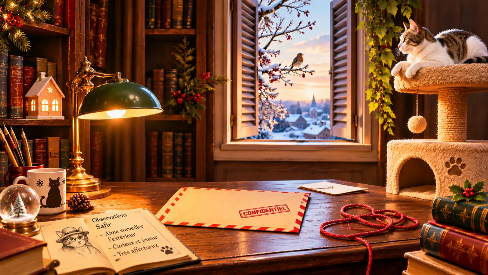

Bureau des Noëls · Dossier BN-2026-F024
Archives confidentielles
Un occupant non habilité s'est installé sur une pièce du dossier. Le Bureau sollicite votre assistance.
Explore les objets en les touchant. Tu peux aussi déplacer les objets que tu récupères vers la scène, ou les sélectionner puis toucher leur destination.


L'archive paraît intacte. Reste à comprendre comment récupérer ce qu'elle contient.
Inventaire
Vide pour l'instant.
Pour utiliser un objet : touche-le puis touche une zone de l'image, ou glisse-le directement vers cette zone.
✓ Archive S — Authentification effectuée
La déclaration de Safir a été récupérée. Son annexe essentielle reste sous scellés jusqu'au rapprochement final avec Rubis.
Fin de cette démonstration. La suite sera intégrée ultérieurement au portail du J24.